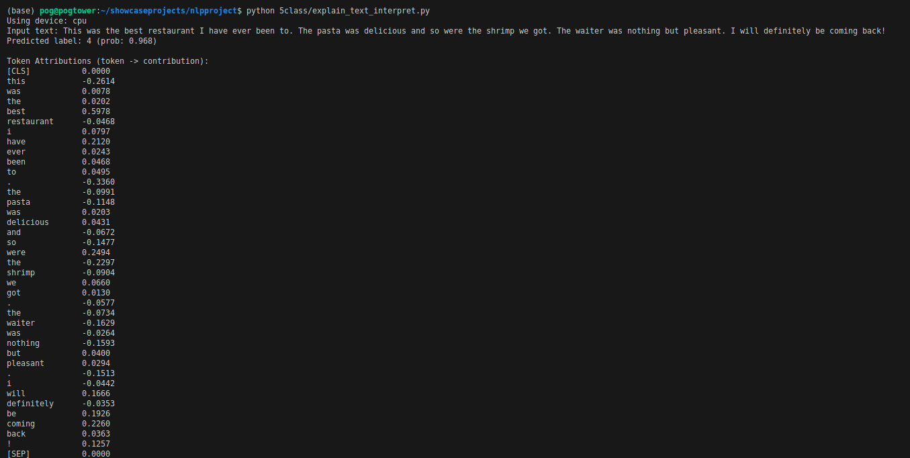

NLP 5 Class Sentinment Analysis Model Trained on Yelp Reviews
DistilBERT · Transformers Interpret · PyTorch · Python
5 Classes
Ratings 0 (lowest) → 4 (highest)
~60k Reviews
56,000 train | 3,800 test
Metrics
Accuracy 0.913 · Macro F₁ 0.918 · Precision 0.907 · Recall 0.930
Live Demo Screenshots
Enter review & submit
Predicted class & probability

Token attribution heatmap
Key Features
- Interactive Inference: Type any customer review and get a live rating (0–4).
- Explainable AI: Per-token contribution scores via
transformers-interpret.
- DistilBERT Backbone: 66 M parameters, fine-tuned for 5-class sentiment on Yelp.
- Robust Metrics:
- üîπ Accuracy:
91.32 %
- üîπ Macro F1:
91.81 %
- üîπ Precision:
90.67 %
- üîπ Recall:
92.96 %